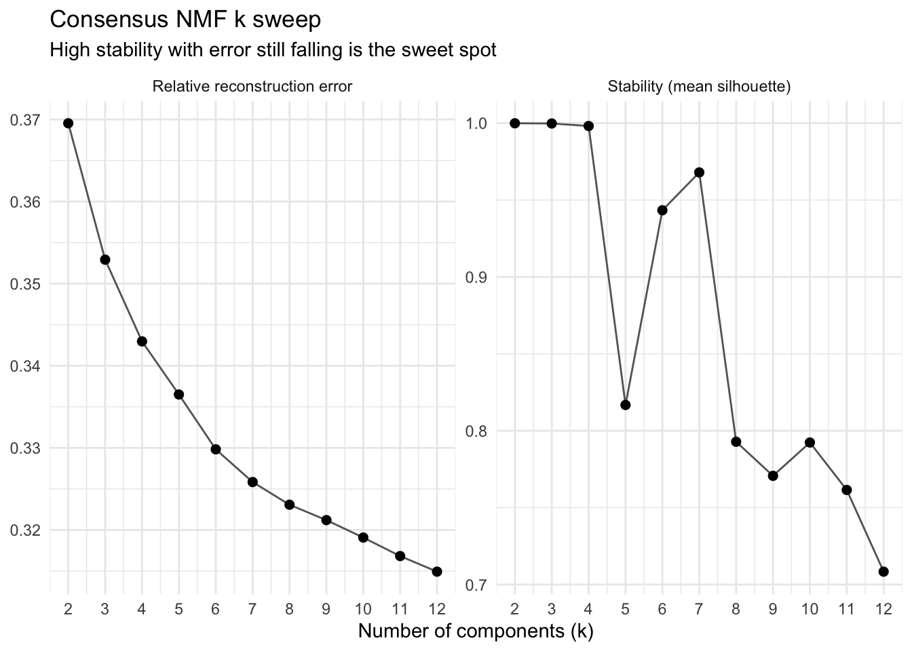

library(bixverse)
library(bixverse.gpu)
library(data.table)
#> Warning: package 'data.table' was built under R version 4.5.2
library(ggplot2)
#> Warning: package 'ggplot2' was built under R version 4.5.2
library(magrittr)
#> Warning: package 'magrittr' was built under R version 4.5.2GPU-accelerated NMF
2026-09-04
Intro
NMF factorises the counts into V ≈ W H with everything non-negative, which is why the components read as additive gene programmes rather than the plus-and-minus directions PCA gives you. bixverse solves it with HALS (hierarchical alternating least squares), and this package moves that solver onto the GPU.
What actually runs on the GPU: both Gram products, both data products, the two HALS sweeps, the column normalisation and the objective. V, W and H stay resident, so the only thing crossing back per iteration is a small partials vector.
What does not: the NNDSVD initialisation, and the whole consensus machinery. Pooling the components across restarts, the local-density filter, the k-means, the silhouette and the per-coordinate median all run on the CPU, shared verbatim with bixverse. That is deliberate. Those operate on a (k * n_runs) x dim matrix with k * n_runs in the hundreds, so they are nowhere near the solve in cost and porting them would buy nothing.
So where does the GPU actually help? Not too much in a single fit. It helps when the same matrix serves many solves, because V uploads once and every restart and every rank reuses it. On the CPU each of those solves pays full memory traffic over V again. The k sweep is length(k_range) * n_runs solves over one matrix, which is exactly that shape.
One limit to know up front: the kernels tier their workgroup width by rank and stop at 128. Ask for more and you get an error pointing you at the CPU version, not a silent fallback.
The params, the result classes and everything downstream are identical to the CPU versions. If you have not seen those, read the bixverse bag-of-genes vignette first.
Note
Vignettes were built locally on a MacBook Pro M1 Max. The GH runners were just too slow and do not have proper GPU support. This gives an idea of speed on a decent, but older machine.
Rebuilding a processed CD34
Same CD34 cells as the other single cell vignettes for meta cells. Load, pick HVGs, PCA. No QC needed, the data is already filtered.
Rebuild the CD34 cell object (click to expand)
cd34_path <- download_cd34_data()
tempdir_cd34 <- tempdir()
sc_object <- SingleCells(dir_data = tempdir_cd34)
sc_object <- load_h5ad(object = sc_object, h5_path = cd34_path)
#> Using light streaming for the CSR to CSC conversion.
#> Loading observations data from h5ad into the DuckDB.
#> Loading variables data from h5ad into the DuckDB.
sc_object <- find_hvg_sc(
object = sc_object,
hvg_no = 2000L,
.verbose = FALSE
)
sc_object <- calculate_pca_sc(
object = sc_object,
no_pcs = 30L,
sparse_svd = FALSE
)
#> Using dense SVD solving on scaled data on 2000 HVG.
sc_object
#> Single cell experiment (Single Cells).
#> No cells (original): 6881
#> To keep n: 6881
#> No genes: 12464
#> HVG calculated: TRUE
#> PCA calculated: TRUE
#> Other embeddings: none
#> KNN generated: FALSE
#> SNN generated: FALSE
#> MAGIC imputed: none
#> Stale artefacts: nonePicking k
You do not know k in advance, and NMF is non-convex, so a single fit at a guessed rank tells you very little. Consensus NMF (Kotliar et al., 2019) answers this by running the fit many times from different random starts and asking which programmes keep coming back.
nmf_k_sweep_gpu_sc() does that across a range of ranks and reports stability (mean silhouette of the consensus clusters) against reconstruction error. It keeps no factors, so a wide range stays cheap in memory.
sweep_time <- system.time({
k_sweep <- nmf_k_sweep_gpu_sc(
object = sc_object,
k_range = 2:12,
n_runs = 10L,
nmf_consensus_params = params_nmf_consensus(density_threshold = 2)
)
})
k_sweep
#> NmfKSweepResult (consensus NMF k sweep)
#> Source class: SingleCells
#> k range: 2 to 12
#> No runs per k: 10
#> Most stable k: 2 (stability = 0.9999)
#>
#> k stability best_error median_error consensus_failed n_dropped
#> <int> <num> <num> <num> <lgcl> <int>
#> 1: 2 0.9999074 0.3695188 0.3695305 FALSE 0
#> 2: 3 0.9997740 0.3529083 0.3529186 FALSE 0
#> 3: 4 0.9981312 0.3429484 0.3429652 FALSE 0
#> 4: 5 0.8167554 0.3362945 0.3364998 FALSE 0
#> 5: 6 0.9433510 0.3297761 0.3298202 FALSE 0
#> 6: 7 0.9679552 0.3257553 0.3258369 FALSE 0
#> 7: 8 0.7928372 0.3229811 0.3230748 FALSE 0
#> 8: 9 0.7706839 0.3205590 0.3211995 FALSE 0
#> 9: 10 0.7923468 0.3183019 0.3190773 FALSE 0
#> 10: 11 0.7614895 0.3166320 0.3168212 FALSE 0
#> 11: 12 0.7083961 0.3143754 0.3149250 FALSE 0
#> n_empty_clusters n_converged
#> <int> <int>
#> 1: 0 10
#> 2: 0 10
#> 3: 0 10
#> 4: 0 10
#> 5: 0 10
#> 6: 0 10
#> 7: 0 10
#> 8: 0 10
#> 9: 0 10
#> 10: 0 10
#> 11: 0 10
plot(k_sweep)
The rule of thumb is to take the last k before stability falls away, while the error curve is still coming down. Error always falls with k, so it never picks a rank on its own; stability is what stops you.
Do not just read off the most stable row. Low ranks are trivially stable, since two components are hard to disagree about, and the header will happily tell you k = 2. What you want is the last rank that still holds up. Here stability sits near 1 through k = 4, dips at 5, recovers at 6 and 7, then falls away from 8 onward and does not come back. Error is still dropping at 7, so that is where we fit.
A note on density_threshold = 2. The filter drops components sitting in a sparse neighbourhood, and 2 is the cosine ceiling, so that switches it off. With 10 restarts it has very little to work with, and a run that drops below k survivors errors out rather than quietly returning something worse. Turn it back on once you are running 50 or more restarts.
Fitting at the chosen k
nmf_res <- consensus_nmf_gpu_sc(
object = sc_object,
k = 7L,
n_runs = 20L,
nmf_consensus_params = params_nmf_consensus(density_threshold = 2)
)
nmf_res
#> ConsensusNmfResult (consensus HALS NMF)
#> Source class: SingleCells
#> No genes: 2000
#> No cells: 6881
#> No components: 7
#> No runs: 20
#> Stability: 0.9019
#> Relative error: 0.3258
#> Dropped: 0 / 140 components
#> Preprocessing: noneget_stability() gives you the diagnostics behind the fit: the mean silhouette, the relative reconstruction errors, and a row per pooled component recording where it landed.
nmf_diag <- get_stability(nmf_res)
nmf_diag$stability
#> [1] 0.9019366
nmf_diag$cluster_sizes
#> cluster n
#> <int> <int>
#> 1: 1 21
#> 2: 2 20
#> 3: 3 22
#> 4: 4 20
#> 5: 5 20
#> 6: 6 17
#> 7: 7 20With 20 restarts, a cluster of 20 is a programme every run found. A thin one is a programme only some initialisations saw, and it is worth a squint before you build a story on it.
To read off what a programme is, rank the genes by their loading in W:
w_mat <- get_w(nmf_res)
top_genes <- lapply(colnames(w_mat), \(comp) {
names(sort(w_mat[, comp], decreasing = TRUE))[1:10]
})
names(top_genes) <- colnames(w_mat)
top_genes[1:3]
#> $comp_01
#> [1] "EEF1A1" "RPL13" "RPL13A" "RPS23" "RPS3" "RPS24" "RPS6" "RPL19"
#> [9] "RPL28" "RPS19"
#>
#> $comp_02
#> [1] "NKAIN2" "MEIS1" "EEF1A1" "RPL13" "PLXDC2" "ZNF385D" "INPP4B"
#> [8] "RPL13A" "CALN1" "RPS23"
#>
#> $comp_03
#> [1] "EEF1A1" "RPL13A" "RPL13" "ZNF385D" "RPS23" "RPS6" "RPS3"
#> [8] "PTMA" "RPL19" "RPS3A"H is k x cells, so the activations drop straight onto an embedding or into the obs table.
h_mat <- get_h(nmf_res)
dim(h_mat)
#> [1] 7 6881
round(h_mat[1:3, 1:4], 3)
#> cd34_multiome_rep1#AAACAGCCACTCGCTC-1
#> comp_01 20.415
#> comp_02 2.704
#> comp_03 3.809
#> cd34_multiome_rep1#AAACAGCCACTGACCG-1
#> comp_01 0.000
#> comp_02 3.724
#> comp_03 0.000
#> cd34_multiome_rep1#AAACAGCCATAATCAC-1
#> comp_01 10.005
#> comp_02 15.652
#> comp_03 2.624
#> cd34_multiome_rep1#AAACATGCAAATTCGT-1
#> comp_01 7.715
#> comp_02 15.218
#> comp_03 0.000CPU versus GPU
The honest comparison. Both solvers run the same HALS, the same number of restarts and the same host-side consensus step, so the only thing that differs is where the linear algebra happens.
gpu_time <- system.time({
gpu_fit <- consensus_nmf_gpu_sc(
object = sc_object,
k = 7L,
n_runs = 20L,
nmf_consensus_params = params_nmf_consensus(density_threshold = 2),
seed = 42L,
.verbose = TRUE
)
})
cpu_time <- system.time({
cpu_fit <- consensus_nmf_sc(
object = sc_object,
k = 7L,
n_runs = 20L,
nmf_consensus_params = params_nmf_consensus(density_threshold = 2),
seed = 42L,
.verbose = TRUE
)
})
data.table(
version = c("CPU", "GPU"),
seconds = round(c(cpu_time[["elapsed"]], gpu_time[["elapsed"]]), 2)
)[, speed_up := round(seconds[1] / seconds, 2)][]
#> version seconds speed_up
#> <char> <num> <num>
#> 1: CPU 20.56 1.00
#> 2: GPU 6.19 3.32Do the two agree? Not bit for bit, and they cannot: f32 GEMM on the device reduces in a different order than the CPU path, and NMF is non-convex, so tiny differences early can send a restart to a different local optimum. What has to match is the answer.
One thing to keep in mind about the restarts: on the CPU they run across cores, on the GPU they run one after the other on a single device. So the GPU is giving up the easiest parallelism there is and still has to win on the solve itself. That is also why the k sweep flatters it more than a single consensus fit does: more solves over the same resident matrix, and no extra upload for any of them.
Meta cells
Everything above dispatches on MetaCells too, with the same generics. Meta cells are the path where consensus NMF is genuinely affordable, since a few thousand aggregates instead of a few hundred thousand cells makes n_runs = 50 unremarkable. See the SEACells vignette for getting there.
mc_sweep <- nmf_k_sweep_gpu_sc(
object = mc_object,
k_range = 2:12,
n_runs = 20L
)
mc_nmf <- consensus_nmf_gpu_sc(
object = mc_object,
k = 6L,
n_runs = 20L
)What is next
The consensus step is now the floor on how fast this can get. Once the solves move to the device, the pooling and the k-means start showing up in the profile at large n_runs, and clustering in cell space (consensus_target = "w") is the pathological case: it pools a dense (k * n_runs) x n_cells matrix and runs an exhaustive cosine search over it. That one is worth porting.
The rank cap at 128 is a workgroup-tiering limit rather than anything fundamental. It has not bitten in practice, since a 128-programme factorisation of single cell data is well past interpretable, but it is there.